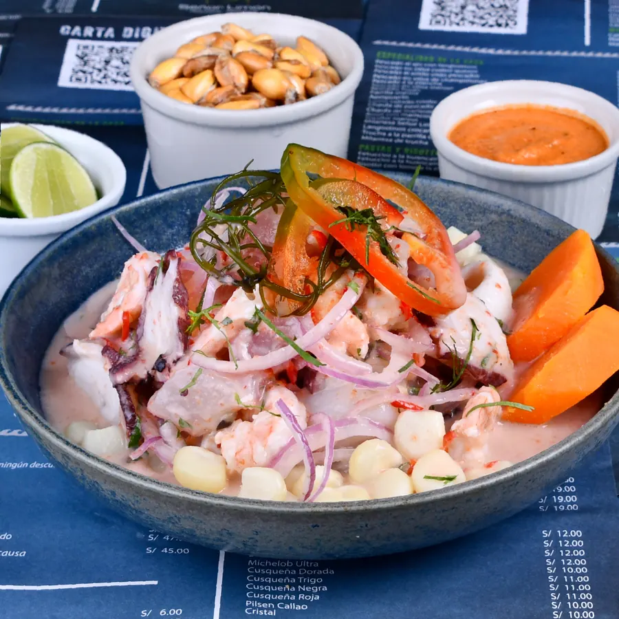
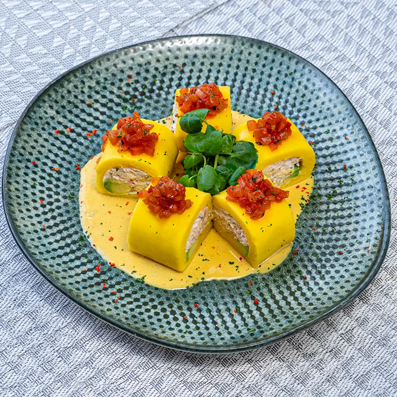
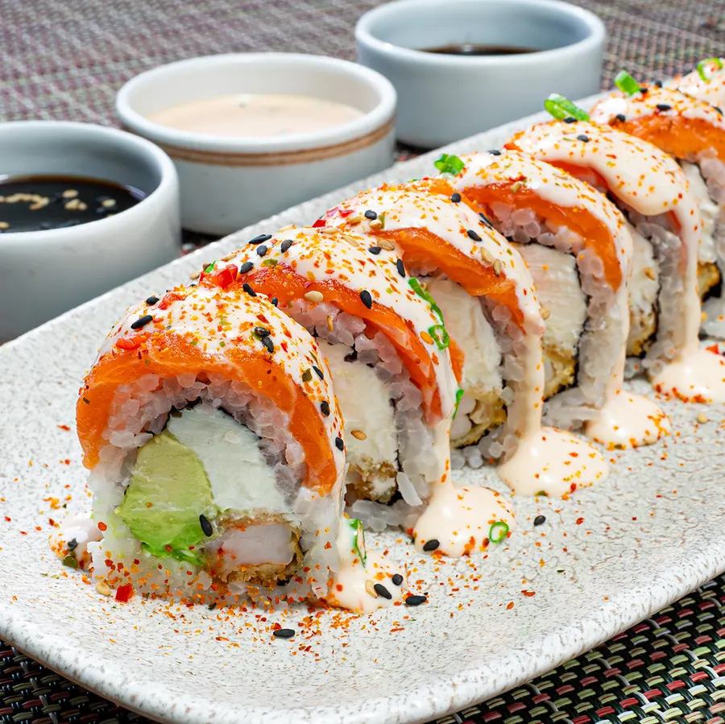

Pesca del día
Elegimos el pescado cada mañana. Por eso algunos platos dependen de lo que llegue del mar: la carta se ajusta a la pesca.
Nosotros
Nacimos en San Miguel el 1 de diciembre de 2001 con una idea simple: cocinar el mar peruano sin apuros y con insumos de verdad.
Nuestra cocina
Elegimos el pescado cada mañana. Por eso algunos platos dependen de lo que llegue del mar: la carta se ajusta a la pesca.
El limón peruano es el único capaz de darle a nuestro cebiche su cocción y su sabor. Es el insumo que da nombre a la casa.
Crecimos de un local en San Miguel a ocho restaurantes en Lima, manteniendo la misma cocina y el mismo trato.
Nuestra carta en fotos

Pescado del día con mixtura de mariscos.

Papa amarilla, crema de ají amarillo y cangrejo.

Sopa contundente de mariscos y cangrejo.

Diez cortes con langostino, palta y atún.
Ocho locales en Lima y delivery gratis hasta 3.5 km. Te esperamos.